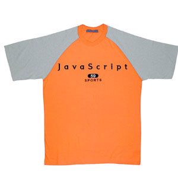

<html>
<head>
<title>자바스크립트 강좌</title>
<meta http-equiv="Content-Type" content="text/html; charset=euc-kr">

<script language="JavaScript">
<!--

today = "수" // 오늘의 요일입력
switch(today) {

case "월" :
case "화" : document.write("")
// 변수 today가 월요일이나 화요일이면 흰옷을 출력
break // switch문 빠져나옴

case "수" :
case "목" : document.write("")
// 변수 today가 수요일이나 목요일이면 오랜지옷을 출력 
break // switch문 빠져나옴

case "금" :
case "토" :
case "일" : document.write("")
// 변수 today가 금요일이나 토요일 혹은 일요일이면 블루옷을 출력
break // switch문 빠져나옴

default : document.write("요일만 입력하실수가 있습니다.")
// 요일 이외의 다른 값을 입력했을경우 출력 
}
//-->
</script>

</head>
<body bgcolor="#FFFFFF" text="#000000">
</body>
</html>